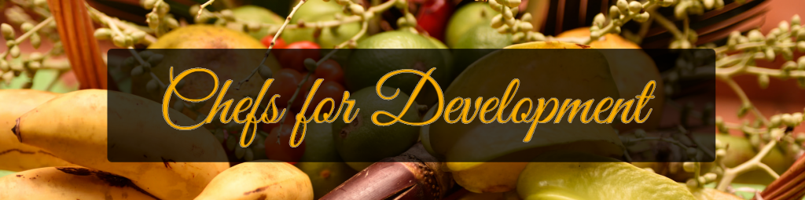

WTD2017: Agritourism Development in Small Island Developing States (SIDS)

Tourism is a booming market, and one which shows no signs of slowing down. Its growth has the potential to improve the livelihoods of millions of people in countries around the world, particularly where synergies are created between tourism and other economic activities – from agriculture and manufacturing, to sports and sciences. Once considered unconventional, types of tourism such as eco-tourism, agritourism and culinary or food tourism have now become established niche markets, bringing with them big opportunities for chefs, farmers and small businesses.
Shadel Nyack Compton (left) at Belmont Estate, Grenada © CTA
At the global scale, the tourism sector boasts some impressive figures. In 2016, there was a 3.9% growth in international tourist arrivals amounting to total of 1,235 million arrivals, and the United Nations World Tourism Organisation predicts that this figure will balloon to 1.4 billion by 2020, and 1.8 billion by the year 2030. In terms of its economic impact, tourism is one of the most important sectors, generating 10% of the world’s GDP and supporting one in ten jobs. Tourism is particularly important for developing countries, where it is the leading export category. Forecasts also show that the biggest growth in tourism arrivals up until 2030 will come from emerging economies, notably in the Pacific and in Africa.
Opportunities in Agriculture and Tourism
However, many emerging small islands that are dependent on tourism also rely significantly on food imports. In the Caribbean, up to 80% of the food consumed is imported. As a result, the region has some of the world’s highest levels of non-communicable diseases and obesity rates. Eight out of ten countries with the world’s worst rates of obesity are in the Pacific islands.
Tanna Coffee, Vanuatu © Tanna Coffee
For Pacific economies, tourism and agriculture are two of the most critical industries, and strengthening linkages between the two will provide new income opportunities and growth for value chain actors serving the tourism markets.
Linkages between agriculture and tourism not only potentially increase opportunities for domestic agriculture earnings, new markets and product development – and therefore sustainable economic growth – but also offer opportunities to help develop visitor attractions and distinctive tourism destination brands through the creative use and marketing of local produce and production techniques.
Prioritising Quality and Policy
High quality food is critical to hotels, lodges and resorts, and sourcing a bigger part from local producers and processors can generate substantial gains and generate greater investment in local production. The challenges of shifting food sourcing to local suppliers need to be addressed in a way that meets commercial standards and customer preferences, and ensures compliance with food and safety requirements.
Salad grown using hydroponics in Haiti © Jardins Hydroponiques d’Haiti
Equally critical are the policy frameworks which promote linkages between agriculture, tourism and trade sectors. The trade policy environment should be more favourable for the private sector and investment, while supporting local entrepreneurs and SMEs through appropriate measures that address import substitution, notably in the form of tariff and non-tariff barriers.
Working with the Chefs
As part of its work on agribusiness development in SIDS, CTA together with key partners such as the Pacific Islands Private Sector Organisation (PIPSO), the South Pacific Tourism Organisation (SPTO), IICA, Chefs across regions and private sector organisations, is supporting agriculture and tourism linkages to enhance incomes for farmers, increase growth and promote local food in major hotels and restaurants.
A key area is working with chefs and the hospitality sector to promote food tourism, local cuisine and education about traditional foods and ingredients. Chefs for Development (Chefs4Dev) is an online platform which uses chefs’ role as ambassadors of local cuisine and teams them up with smallholder farmers and agro-processors who can supply quality products.
The aim is to increase revenues for smallholder producers and promote healthier, locally sourced agrifood products to households, hotels and restaurants in regions suffering from soaring food imports and high levels of diet related diseases. Tourism is a major source of income for the island states of all three regions, yet most visitors and domestic consumers are served food shipped in from other countries and cultures, much of it high in calories, sugar and salt.
Visit our platform www.chefs4dev.org and join us in future activities.
Discover the profiles of esteemed Chefs from the Caribbean and Pacific.
Follow Chefs4Dev on twitter @Chefs4Dev and use the hashtag #Chefs4Dev
Brussels Briefing 46 “Agribusiness Development & Tourism Markets in SIDS” 21st September 2016
Pacific
- Samoa Agritourism Policy Setting Workshop, Apia, Samoa, 13-16 December 2016
- Highlights Samoa Agritourism Policy Setting Workshop
- Vanuatu Agritourism Policy Setting Workshop, Port-Vila, Vanuatu, 25-27 May 2016
- Highlights Vanuatu Agritourism Policy Setting Workshop
- Vanuatu Agritourism Festival 2016 Port-Vila, Vanuatu, 9-11 November 2016
- Second Pacific Agribusiness Forum 29 August - 1 September 2016, Apia, Samoa
- Second Pacific Agribusiness Forum Outcomes
- First Pacific Agribusiness Forum, 1-3 July 2015, Denarau, Fiji
- First Pacific Agribusiness Forum Outcomes
- Pacific Community Agritourism Week, 29 June - 3 July 2015, Denarau, Nadi, Fiji
Caribbean
- Third Caribbean Agribusiness Forum 29-30 January 2017, Trinidad and Tobago,
- Second Caribbean Agribusiness Forum 5-6 November 2015, Barbados
- Regional Briefing Caribbean agrifood products 16 – 18 of November 2014, Grenada
Chefs for Development (Chefs4Dev) http://chefs4dev.org/